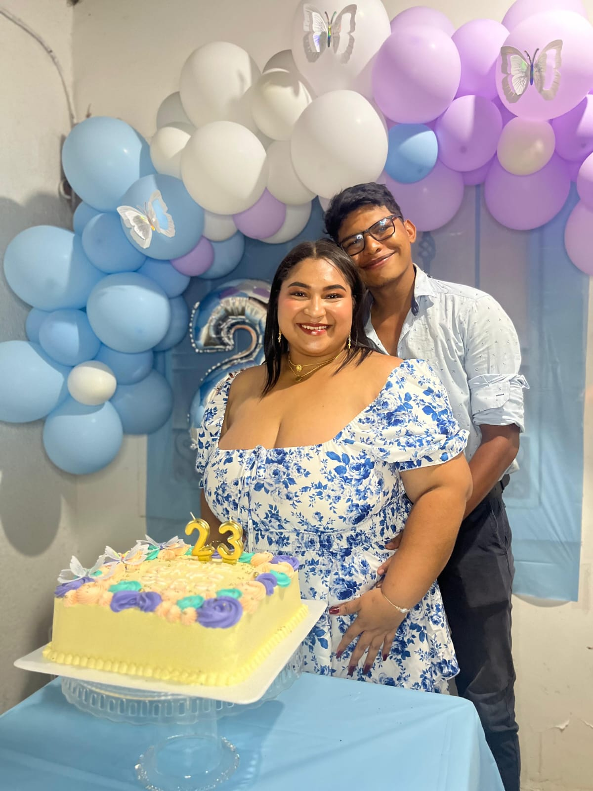
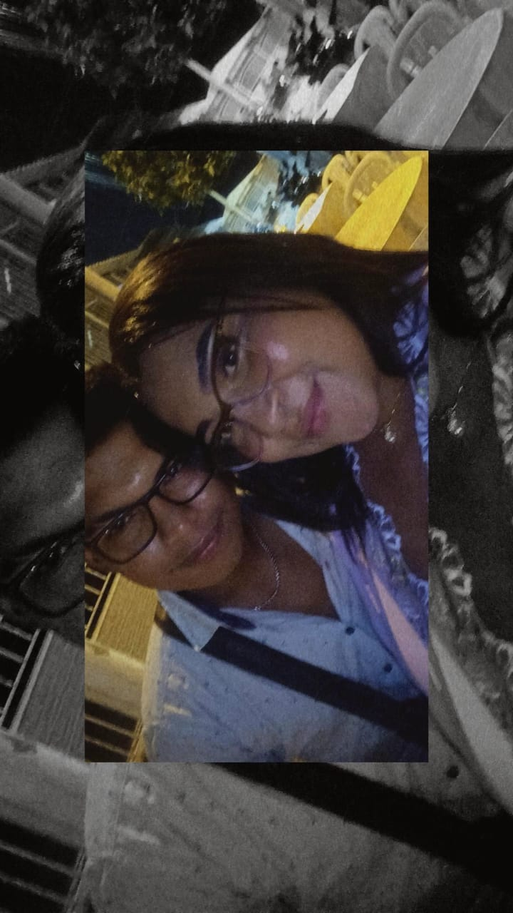
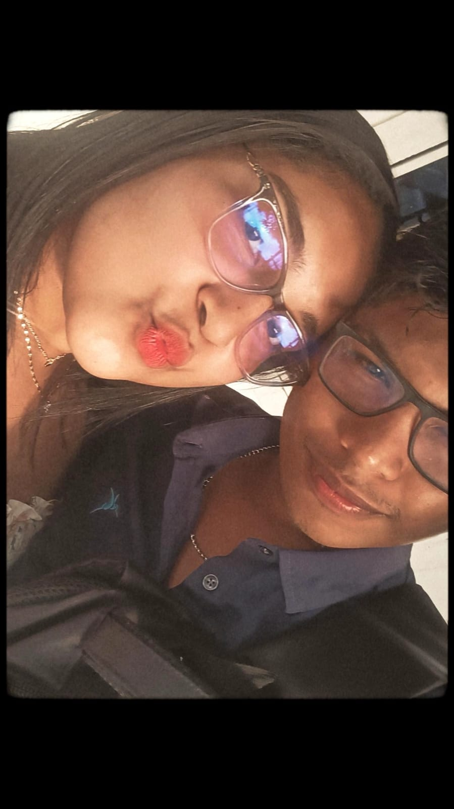
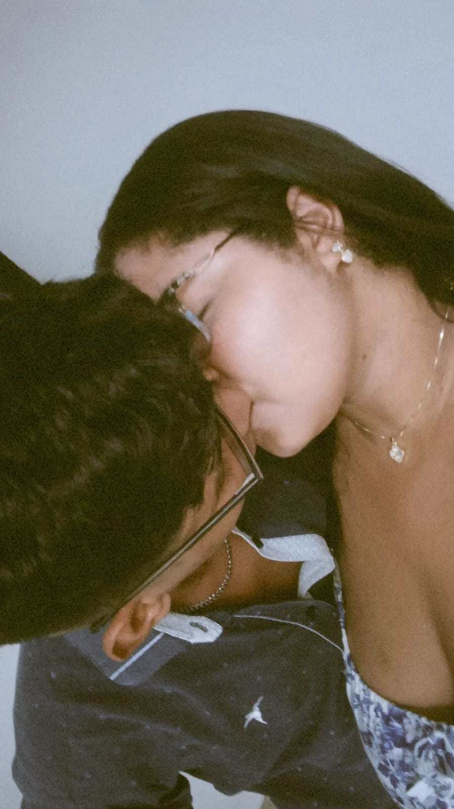

Sofi
No sé si existe una manera perfecta de escribir todo lo que siento, pero sé que necesitaba intentarlo.
Porque hay algo que quizás nunca dejé de tener claro: yo todavía te quiero en mi vida.
Y esta carta no nace solamente de la nostalgia por lo que vivimos. Nace de algo mucho más sincero: de las ganas que todavía tengo de volver a encontrarnos.
He pensado muchísimo en nosotros. En todo lo bonito que vivimos, en nuestras risas, nuestras conversaciones, nuestros momentos y todas esas pequeñas cosas que hicieron que fueras una persona tan importante para mí.
Pero también he pensado en nuestros errores, en las cosas que pudieron hacerse diferente y en todo aquello que quizás nos fue alejando.
Y si algo he entendido con el tiempo...
es que no quiero volver simplemente
para repetir nuestra historia.
Quiero volver para escribir una historia diferente contigo.
Una historia en la que podamos escucharnos más, entendernos mejor, hablar de lo que sentimos y aprender realmente de todo aquello que nos hizo daño.
Sé que decir "quiero cambiar" es fácil. Cualquiera puede escribirlo en una carta.
Por eso no quiero llenarte de promesas solamente para conseguir que regreses.
Si alguna vez vuelvo a tener la oportunidad de estar contigo, quiero demostrártelo con hechos.
Quiero volver a ganarme tu confianza. Quiero volver a conquistarte. Quiero volver a hacerte sentir que estar conmigo puede ser algo bonito, tranquilo y especial.
Quiero aprender a quererte de la manera en que tú necesitas ser querida.
Y quiero que, si algún día volvemos a estar juntos, no sea porque olvidamos lo que pasó, sino porque aprendimos de ello.
Extraño muchas cosas de nosotros.
Extraño nuestras conversaciones, nuestras risas, nuestras pequeñas costumbres, esos momentos que solamente nosotros entendíamos.
Pero sobre todo...
extraño tenerte cerca.
Extraño esa sensación de saber que eras una de las primeras personas a las que quería contarle algo cuando me pasaba.
Extraño compartir mis días contigo.
Y sí, todavía pienso en nosotros.
Todavía imagino conversaciones que quisiera tener contigo, lugares a los que me gustaría ir contigo y momentos que me gustaría volver a vivir a tu lado.
Porque para mí, lo nuestro todavía significa muchísimo.
No quiero fingir que ya no siento nada cuando la verdad es completamente diferente.
Todavía te quiero.
Y todavía tengo ganas de luchar por nosotros.
No desde la desesperación.
No desde el miedo.
Sino desde la certeza de que, si existe una
oportunidad de volver a construir algo contigo,
quiero intentarlo de verdad.
No sé exactamente qué pasa por tu cabeza mientras lees esto.
Tampoco sé qué siente tu corazón ahora mismo.
Y no quiero presionarte para que tengas una respuesta inmediata.
Solo quiero que conozcas mi verdad.
Yo todavía quiero volver contigo.
Quiero volver a tener la oportunidad de conquistarte.
Quiero volver a hacerte sonreír.
Quiero volver a crear recuerdos contigo.
Quiero volver a sentir que somos un equipo.
Y quiero que, si algún día decidimos intentarlo nuevamente, podamos mirar atrás y decir que todo aquello que vivimos nos enseñó a querernos mejor.
No espero que simplemente olvides lo malo.
Quiero tener la oportunidad de demostrarte que aprendí de ello.
Quiero escucharte.
Entenderte.
Cuidarte.
Tener paciencia.
Y volver a construir tu confianza poco a poco.
Si todavía queda un poquito de nosotros dentro de ti...
yo quiero luchar por ese poquito.
Porque no quiero que lo nuestro se quede solamente como un recuerdo bonito.
Quiero que, si tú también lo quieres, podamos convertir ese recuerdo en una nueva oportunidad.
Una oportunidad para empezar de nuevo.
Pero esta vez...
hacerlo mejor.
No necesito que me respondas ahora.
No necesito que tomes una decisión mientras lees estas palabras.
Solo quería que supieras qué quiero yo.
Quiero volver a intentarlo contigo.
Y si algún día decides abrirme nuevamente la puerta, quiero entrar diferente.
Con más paciencia.
Con más comprensión.
Con más madurez.
Con más ganas de cuidarnos.
Y con la intención de demostrarte cada día
que vale la pena volver a construir ese
"nosotros".
Porque todavía te quiero, Sofi.
Y todavía quiero que seas tú.
Algunos recuerdos...
Porque todavía hay momentos que me gustaría volver a vivir contigo.




Hay fotografías que solamente capturan
un instante...
pero cuando miro estas fotos,
yo no veo solamente imágenes.
Veo momentos que todavía significan
muchísimo para mí.
Y una parte de mí todavía quisiera
volver a vivir muchos de ellos contigo. ♡